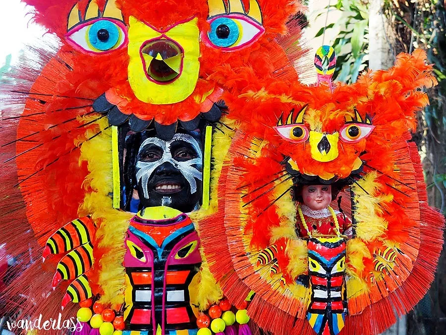
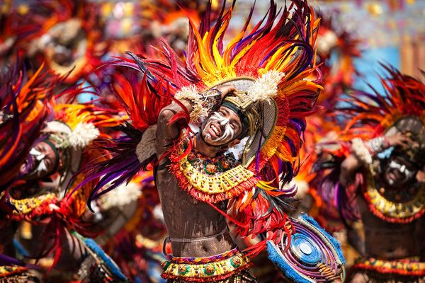
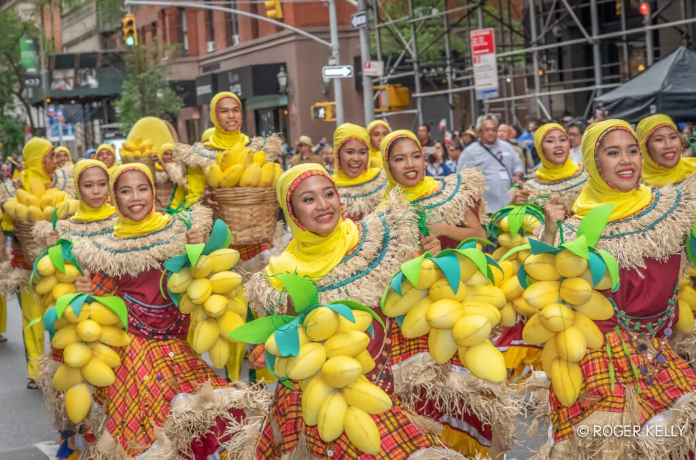
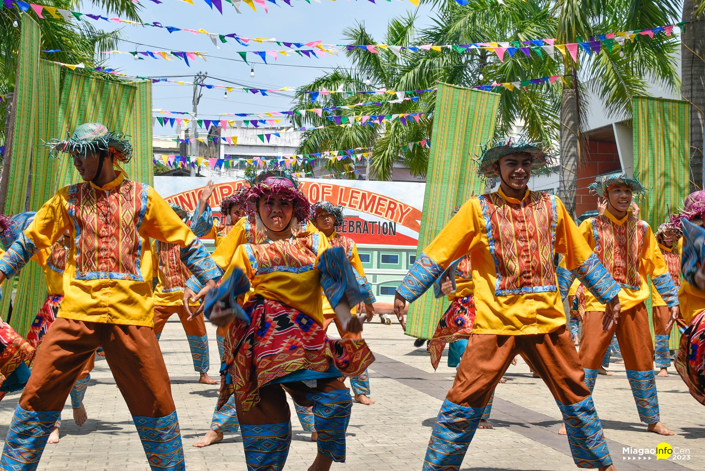

The Ati-Atihan Festival is an annual Philippine celebration conducted in January to celebrate the Santo Niño (Holy Child or Infant Jesus) in various municipalities of Aklan province, Panay Island. The province's capital, Kalibo, hosts the largest event on the third Sunday of January. "To imitate the Ati people" is the meaning of the name Ati-Atihan. Religious processions, street parades, themed floats, colorfully costumed dance groups, marching bands, and people wearing face and body paint are all part of the event. The locals refer to their style of dancing, which involves briefly dragging one's foot over the ground in time with the marching bands, as "Sadsad," which is also the name of the street parade.

In honor of Santo Niño, the Dinagyang Festival in Iloilo City is a spectacular celebration that combines artistic performance, cultural expression, and religious devotion. The festival, which was formally named in 1977, began in 1967 and includes activities such as the Tambor Trumpa Martsa Musika, the Miss Iloilo Pageant, the Ati Tribe Competition, the Dinagyang Float and Lights Parade, the Pamukaw, the Ati Tribe Competition, the Fluvial Procession, and the Kasadyahan Regional Cultural Competition. Although the festivities and preparations begin weeks in advance, it is held on the fourth Sunday of January every year. Through formal training, community mentoring, and familial customs, cultural transmission takes place, with active participation from performers, choreographers, religious followers, and the general public. Through tourist and business prospects, the festival strengthens faith, cultural identity, and local economic growth, all of which are extremely valuable to Iloilo City.

Every May, the Philippines' Guimaras province hosts the Manggahan Festival, a cultural, agricultural, and culinary celebration. Also known as the Guimaras Mango Festival, it honors the mango fruit and agriculture, which, aside from tourism, are the main engines of the local economy. Guimaras is referred to as the mango capital of the Philippines because of the distinctive sweetness and export-quality of its mango. Due to the festival's date, it also commemorates the annual anniversary that the island was given the status of a province, making it the province's founding anniversary celebration.

Every year during the first week of February, the residents of Miagao (Province of Iloilo) celebrate the Salakayan Festival, which honors the fight in which the locals successfully repelled Muslim raiders, known to the Spanish as Moros. The Festival is a vibrant representation of the occurrence in 1754. The significance of the historic event is often showed through the fast-paced choreography, heart-pounding music, and artistic emotions of today's festivals. A genuine fight, such as the one in Salakayan (from the root word salakay, which means to attack), is neither festive nor well staged. The men and women on the opposing sides find it to be a horrific, agonizing, and gory affair.

The Tultugan Festival is celebrated every December in Maasin, Iloilo. The tribal dance competition is the centerpiece of the event, which is mostly devoted to bamboo and its various applications. Bamboo is a commonly available material that has been utilized for centuries throughout the archipelago. The festival performances, which typically portray the local culture, provide an ideal platform for showcasing new and inventive methods to integrate bamboo into visually pleasing and modern practical items. The development and transformation of the several bamboo-based goods included in the presentation are approached from different angles. The festival's costumes, props, and musical instruments are all made of bamboo, or at least influenced by it. By tying numerous priceless traditions to the festival, the town hopes to preserve and protect its sustainability for future generations.